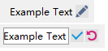

QCtmEditLabel Class
| Header: | #include <QCtmEditLabel.h> |
| Inherits: | QLabel |
Properties
- editButtonIcon : QIcon
- readOnly : bool
Public Functions
| QCtmEditLabel(QWidget *parent = nullptr, Qt::WindowFlags f = Qt::WindowFlags()) | |
| QCtmEditLabel(const QString &text, QWidget *parent = nullptr, Qt::WindowFlags f = Qt::WindowFlags()) | |
| virtual | ~QCtmEditLabel() |
| QIcon | editButtonIcon() const |
| QIcon | finishButtonIcon() const |
| bool | isReadOnly() const |
| QIcon | revertButtonIcon() const |
| void | setEditButtonIcon(const QIcon &icon) |
| void | setFinishButtonIcon(const QIcon &icon) |
| void | setReadOnly(bool flag) |
| void | setRevertButtonIcon(const QIcon &icon) |
Signals
| void | editFinished() |
Reimplemented Protected Functions
| virtual bool | event(QEvent *e) override |
| virtual QSize | minimumSizeHint() const override |
Detailed Description
截图:

Property Documentation
editButtonIcon : QIcon
编辑按钮的图标.
Access functions:
| QIcon | editButtonIcon() const |
| void | setEditButtonIcon(const QIcon &icon) |
readOnly : bool
是否只读.
Access functions:
| bool | isReadOnly() const |
| void | setReadOnly(bool flag) |
Member Function Documentation
[explicit] QCtmEditLabel::QCtmEditLabel(QWidget *parent = nullptr, Qt::WindowFlags f = Qt::WindowFlags())
构造函数 parent, f.
[explicit] QCtmEditLabel::QCtmEditLabel(const QString &text, QWidget *parent = nullptr, Qt::WindowFlags f = Qt::WindowFlags())
构造函数，并设置显示文字 text, parent, f.
[virtual noexcept] QCtmEditLabel::~QCtmEditLabel()
析构函数.
QIcon QCtmEditLabel::editButtonIcon() const
返回编辑按钮图标.
Note: Getter function for property editButtonIcon.
See also setEditButtonIcon().
[signal] void QCtmEditLabel::editFinished()
编辑完成时发送该信号.
[override virtual protected] bool QCtmEditLabel::event(QEvent *e)
Reimplements: QFrame::event(QEvent *e).
QIcon QCtmEditLabel::finishButtonIcon() const
返回编辑完成按钮图标.
Note: Getter function for property finishButtonIcon.
See also setFinishButtonIcon.
bool QCtmEditLabel::isReadOnly() const
返回是否只读.
Note: Getter function for property readOnly.
See also setReadOnly.
[override virtual protected] QSize QCtmEditLabel::minimumSizeHint() const
Reimplements an access function for property: QWidget::minimumSizeHint.
QIcon QCtmEditLabel::revertButtonIcon() const
返回回退按钮图标.
Note: Getter function for property revertButtonIcon.
See also setRevertButtonIcon.
void QCtmEditLabel::setEditButtonIcon(const QIcon &icon)
设置编辑按钮图标 icon.
Note: Setter function for property editButtonIcon.
See also editButtonIcon.
void QCtmEditLabel::setFinishButtonIcon(const QIcon &icon)
设置编辑完成按钮图标 icon.
Note: Setter function for property finishButtonIcon.
See also finishButtonIcon().
void QCtmEditLabel::setReadOnly(bool flag)
设置是否只读 flag.
Note: Setter function for property readOnly.
See also isReadOnly.
void QCtmEditLabel::setRevertButtonIcon(const QIcon &icon)
设置回退按钮图标 icon.
Note: Setter function for property revertButtonIcon.
See also revertButtonIcon().